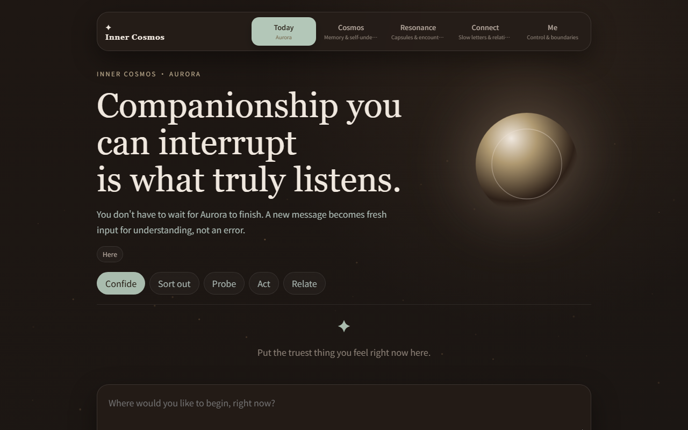
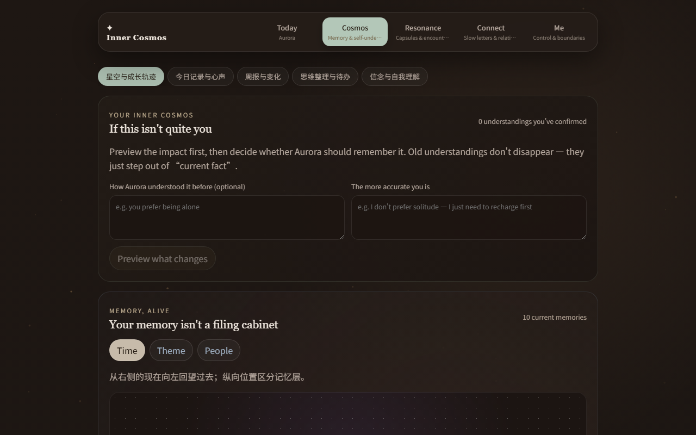
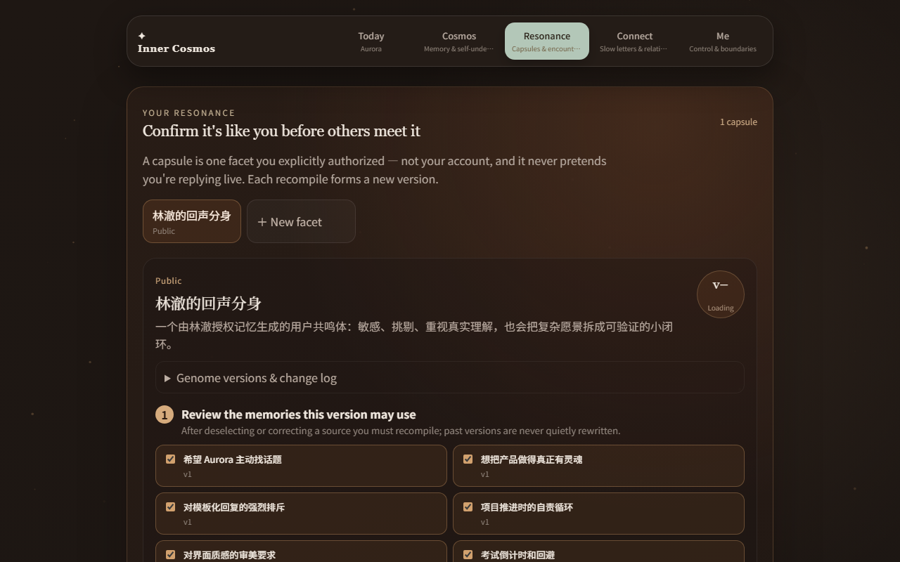
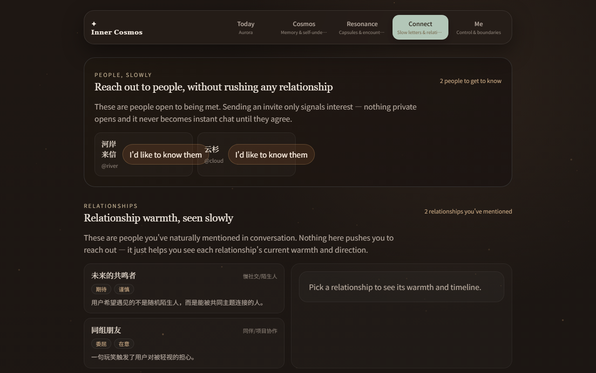

INNER COSMOS · CLOUD-NATIVE AI
← → navigate · N notes · Home / End
01 / 20
Advanced AI Systems on Kubernetes
Cloud-Native Architecture for Advanced AI Systems
How Inner Cosmos achieves continuity, elasticity, observability and controlled delivery on Kubernetes.
Java 21 · Spring Boot
PostgreSQL · pgvector
Redis · Kubernetes
CONVERSATION
MEMORY
RESONANCE
01 · The ProductMain speaker · 40 sec
From self-understanding to human connection

Aurora · Interruptible AI conversation

Inner Cosmos · Correctable memory

Resonance · Versioned Echo Capsules

Connection · Slow letters and consent
01 · The ProductMain speaker · 45 sec
One continuous product journey
The output of one stage becomes governed input to the next.
01
Conversation
Typed multi-message SSE with interruption and replanning.
02
Memory
Claims retain source, confidence and correction history.
03
User Model
Longitudinal views of values, relationships and goals.
04
Consent
The user selects what may enter a Capsule.
05
Resonance
A versioned AI facet enables low-risk discovery.
06
Connection
Slow letters precede mutual human contact.
01 · The ProductMain speaker · 70 sec
The AI runtime behind the experience
A
Living Aurora
Fast and slow reasoning kernels coordinate through typed conversation plans.
Runtime mechanisms
Multi-bubble choreography
Interrupt / stop / replan
Durable WakeIntent
B
Correctable Inner Model
Retrieval returns evidence, not an untraceable personality summary.
Runtime mechanisms
MemoryEvidencePack
PostgreSQL + pgvector
Provenance and correction
C
Authorized Resonance
A Capsule is a versioned compilation of explicitly authorized evidence.
Runtime mechanisms
Capsule Genome
Sandbox and withdrawal
Explainable matching
Real AI providersWeb + AndroidDurable user dataAsynchronous projections
02 · Engineering RequirementsMain speaker · 60 sec
AI workload characteristics become engineering requirements
Long-lived streamingAn Aurora turn keeps intermediate state for tens of seconds.
→
Runtime continuityPod replacement must not create silent or ambiguous turns.
Asynchronous projectionsMemory and profile work continues after the user leaves.
→
Workload-aware elasticityScaling must follow queued work and user waiting.
Multiple runtime rolesOne journey crosses API, worker and scheduler processes.
→
Causal observabilityContext must survive asynchronous boundaries.
Versioned AI behaviorModels, prompts and runtime policies change independently.
→
Controlled deliveryAdmission and rollout decisions require explicit signals.
02 · Engineering RequirementsMain speaker · 60 sec
Runtime architecture on Kubernetes
Experience
React Web / PWA
Capacitor Android
Temporary HTTPS Edge
↓
Interaction
API / SSE
Aurora Runtime
Memory Retrieval
AI Provider Gateway
↓ transactional state ↓ transactional outbox
Processing
PostgreSQL + pgvector
Redis Sessions / Buffer
Worker
Scheduler / WakeIntent
↓
Control Plane
Kubernetes
KEDA
OpenTelemetry
Kyverno
Argo Rollouts
03 · Three Core CapabilitiesTeam handoff · 40 sec
Three cloud-native capabilities carry the technical argument
01
TEAM MEMBER 1 · 3–3.5 MIN
Streaming continuity during Pod replacement
- Active SSE turn
- Graceful termination
- Hard-failure reconciliation
02
TEAM MEMBER 2 · 2.5–3 MIN
Event-driven autoscaling from business backlog
- Outbox pressure
- KEDA scale-out
- Lease and inbox correctness
03
TEAM MEMBER 3 · 3–4 MIN
Distributed tracing across asynchronous boundaries
- W3C trace context
- API / worker / scheduler
- Privacy-safe attributes
Capability 1 · Runtime ContinuityTeam member 1 · 55 sec
What happens when a Pod disappears during an SSE turn?
Active turn
Multi-bubble response is streaming.
Readiness changes
New Service traffic stops entering.
Pod termination
The serving process begins shutdown.
Existing stream
Graceful shutdown allows it to drain.
Replacement
Deployment restores desired capacity.
Routine Pod replacement and abrupt process failure require different recovery paths.
GRACEFUL ≠ SIGKILL
Capability 1 · Runtime ContinuityTeam member 1 · 65 sec
Continuity requires Kubernetes and application state
Traffic
Readiness
Remove the terminating Pod from new Service traffic.
KubernetesProcess
Graceful drain
preStop, termination grace and graceful server shutdown.
Kubernetes + JVMLive session
Redis buffer
Preserve session identity, recent events and reconnect context.
ApplicationConversation
Durable timeline
Persist turn, bubble and event state; reconcile orphaned turns.
PostgreSQL
Kubernetes restores serving capacity. The application restores conversation semantics.
Capability 1 · Runtime ContinuityTeam member 1 · 70 sec
Observed behavior under graceful termination and SIGKILL
Graceful Pod termination
COMPLETED
✓2 of 2 bubbles committed
✓0 duplicated messages
✓0 content loss
✓Deployment restored the replica
Direct JVM SIGKILL
INTERRUPTED
!The active stream was interrupted
✓RecoveryJob reached a terminal state in ~22 s
✓Reconnect returned the terminal state in 1.62 s
✓No silent two-minute hang
VALIDATED ON LOCAL KIND · POSTGRESQL + REDIS
Capability 2 · Workload-Aware ElasticityTeam member 2 · 70 sec
API CPU does not represent asynchronous work pressure
Oldest ready job age
The user-visible wait continues to rise.
t0t1t2t3t4t5t6t7
API CPU utilization
The API remains mostly idle.
t0t1t2t3t4t5t6t7
Users wait for memory and profile projections—not for CPU utilization.
Capability 2 · Workload-Aware ElasticityTeam member 2 · 90 sec
KEDA scales throughput; idempotency preserves correctness
PostgreSQL Outbox
ready count · oldest age
→
OutboxQueueMetrics
Prometheus signal
→
KEDA ScaledObject
→
Worker replicas
1 → 6 → 3 → 1
Expired leases were reclaimed after a worker was deleted.
SYNTHETIC BACKLOG · REAL WORKER PATH
Capability 3 · Causal ObservabilityTeam member 3 · 70 sec
One user journey spans multiple runtime roles and traces
Trace A
HTTP / SSE
→Memory Retrieval
→AI Provider
Trace B
Finish Request
→Outbox
→Worker
→Memory / Profile
Trace C
Scheduler
→WakeIntent Delivery
Causal rule
Parent / child
Only when one operation causally continues another.
Separate trace
When a later scheduler action starts a new causal operation.
A user journey may contain multiple traces. Only real causal parent-child relationships form one trace tree.
Capability 3 · Causal ObservabilityTeam member 3 · 85 sec
W3C trace context survives the transactional outbox
Selected trace · 8 spans
API · POST /dialog/session/{id}/finish
API · secured request
WORKER · outbox.consume [CONSUMER]
WORKER · projection.memory
WORKER · projection.profile
At transaction time
The API stores only the W3C traceparent in the outbox row.
↓
At consumption time
The worker restores a remote parent and starts a real CONSUMER span.
No manually fabricated synchronous call tree.
Capability 3 · Causal ObservabilityTeam member 3 · 70 sec
Preserve causality without recording user content
Recorded
Runtime role and operation type
Provider category
Model, prompt and strategy version
Latency, fallback and result category
Never recorded
Conversation content
Prompt or completion content
Stable user identifiers
Request bodies or full SQL statements
0
Forbidden attribute keys
2×
Application + Collector filtering
04 · Controlled ChangeMain speaker · 75 sec
Two controls govern runtime changes
Before admission
Kyverno
Reject workloads that violate the validated deployment contract.
- Reject root containers
- Require resource requests and limits
- Reject :latest and tag-less images
After admission
Argo Rollouts
Increase exposure only while the revision remains eligible for traffic.
- Weighted canary: 25 → 50 → 100
- Prometheus availability AnalysisRun
- Readiness and progress-deadline abort
Current proof: admission, availability and readiness. Model-quality scoring is not part of the validated rollback path.
04 · Controlled ChangeMain speaker · 60 sec
A 25% canary weight produced 0% canary traffic
HTTPRoute
setWeight 25
→
Canary Pod
0 / 1 Ready
→
Service endpoints
0
→
Actual canary traffic
0%
ABORT
Failed revision removed
4
Stable Pods kept serving
Traffic weight is configuration. Service endpoints determine actual routing.
05 · Engineering LessonsMain speaker · 90 sec
What building Inner Cosmos taught us about cloud-native AI
01
Separate infrastructure recovery from application recovery
A replacement Pod cannot determine whether an AI turn is complete.
02
Scale from user-visible work pressure
Queue age represents waiting more directly than API CPU.
03
Propagate causality across asynchronous boundaries
Per-service dashboards cannot reconstruct a cross-role outcome.
04
Connect every platform component to a product invariant
A component is useful only when its success and failure are observable.
06 · Live DemonstrationAll speakers · 10–12 min
Demo roadmap
Start the slow control loop first; use the waiting time to demonstrate continuity and tracing.
00:00
Inject outbox backlog and start observing KEDA in the background.
Team member 2
00:40
Open an Aurora SSE turn and terminate the serving API Pod.
Team member 1
03:40
Inspect API and worker traces; verify the outbox parent relationship.
Team member 3
07:00
Return to KEDA: observe 1 → 6, backlog drain and lease recovery.
Team member 2
09:30
Show canary isolation and the saved rollback result.
Main speaker
Conclusion
Advanced AI systems need more than container orchestration.
They need application-aware continuity, workload-aware elasticity, causal observability and controlled change.
CONTINUITYELASTICITYOBSERVABILITYDELIVERY